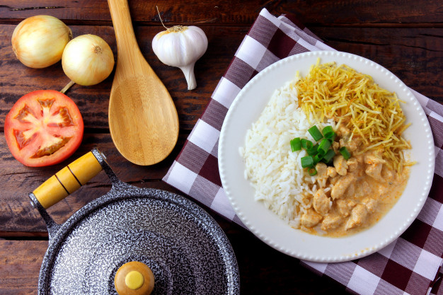

Strongnoof de Frango

Ingredientes
- 500 g de peito de frango cortado em cubos
- 1 cebola picada
- 1 dente de alho picado
- sal a gosto
- pimenta a gosto
- 1 colher de manteiga ou margarina
- 2 colheres (sopa) de maionese
- 1 colher (chá) de mostarda
- 1/2 copo de ketchup
- 1 copo ou sachê de cogumelos
- 1 caixa de creme de leite
- batata palha a gosto
Modo de preparo
- Tempere o frango em cubos com sal, pimenta e a maionese
- Em uma frigideira grande derreta a manteiga
- Doure a cebola e o alho
- Adicione o frango temperado e deixe dourando
- Adicione os cogumelos, a mostarda e em seguida o ketchup
- Acrescente o creme de leite e mexa bem
- Faça as correções de sal e pimenta, se achar necessário
- Sirva com arroz branco e batata palha
Tempo de preparo
30 MIN
Pagina inicial -
Receitas salgadas